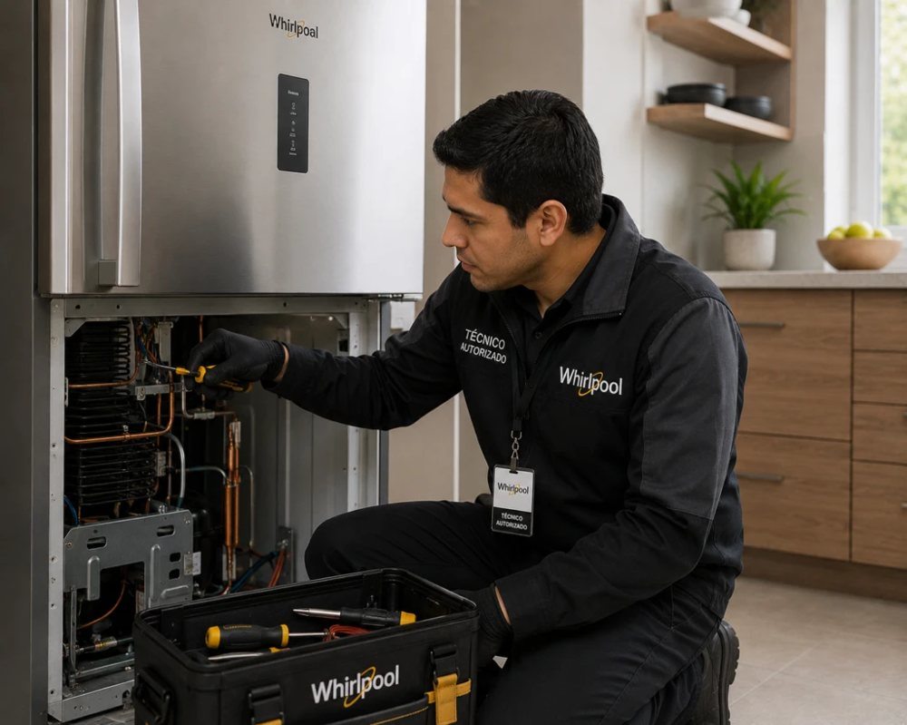

Nuestro servicio técnico Whirlpool en Cartagena identifica el problema de su nevera o nevecón antes de agendar la visita. Estamos certificados en la tecnología Sixth Sense y sistemas de hielo y preparados para resolver estas fallas a domicilio.

Falla común: Display digital apagado o códigos de error intermitentes.
Síntomas: La nevera no responde a los controles o el enfriamiento es inconstante. Indica una posible falla en la tarjeta electrónica principal o el módulo Sixth Sense.
Nuestra solución: Diagnóstico en sitio, reparación con repuestos originales Whirlpool y garantía escrita sobre el trabajo realizado.
Falla común: El hielo se pega o no dispensa agua ni hielo.
Síntomas: El motor del dispensador se atasca o el agua no llega al fabricador. Con el clima de Cartagena, los motores del fabricador de hielo y los termostatos suelen fallar.
Nuestra solución: Diagnóstico en sitio, reparación con repuestos originales Whirlpool y garantía escrita sobre el trabajo realizado.
Falla común: Enfriamiento excesivo en la nevera o calentamiento en el congelador.
Síntomas: El termostato no regula la temperatura o la nevera congela los alimentos. Puede ser el termostato, el sensor de temperatura o una resistencia defectuosa.
Nuestra solución: Diagnóstico en sitio, reparación con repuestos originales Whirlpool y garantía escrita sobre el trabajo realizado.
Diagnosticar correctamente una nevera Whirlpool antes de llamar a un técnico le ahorra tiempo y, en muchos casos, dinero: algunos síntomas apuntan a un problema simple (un empaque suelto, un termostato desconfigurado), mientras que otros —sobre todo los relacionados con el compresor o la tarjeta electrónica— requieren intervención profesional inmediata para evitar que el daño se extienda a otros componentes.
En nuestra experiencia atendiendo neveras Whirlpool en Cartagena, estos son los patrones de síntomas más reveladores: Neveras con tecnología Sixth Sense: La nevera no responde a los controles o el enfriamiento es inconstante. Indica una posible falla en la tarjeta electrónica principal o el módulo Sixth Sense. Dispensadores de agua y fabricadores de hielo: El motor del dispensador se atasca o el agua no llega al fabricador. Con el clima de Cartagena, los motores del fabricador de hielo y los termostatos suelen fallar. Modelos tradicionales y frío seco (No Frost): El termostato no regula la temperatura o la nevera congela los alimentos. Puede ser el termostato, el sensor de temperatura o una resistencia defectuosa. Si su equipo presenta una combinación de estos síntomas —por ejemplo, ruido más acumulación de hielo—, es probable que haya más de una falla simultánea, algo común cuando el mantenimiento se ha postergado por mucho tiempo.
Una pregunta que nos hacen seguido: ¿vale la pena reparar o es mejor comprar una nevera nueva? Como regla general, si el costo de la reparación (repuesto + mano de obra) no supera el 40% del valor de una nevera Whirlpool nueva de gama similar, y el equipo tiene menos de 8-10 años, reparar suele ser la opción más económica. Nuestro diagnóstico gratuito incluye esa comparación para que usted decida con información real, no con una simple corazonada.
Todas las reparaciones que realizamos en neveras Whirlpool en Cartagena incluyen repuestos originales y garantía escrita. Si después de leer esta guía cree que su falla podría estar relacionada con la tecnología Sixth Sense y sistemas de hielo, agende una visita: preferimos revisar el equipo en persona antes de asumir un diagnóstico a distancia.

El diagnóstico es gratuito cuando usted decide realizar la reparación con nosotros.
Sí, diagnosticamos y reparamos compresores Whirlpool (incluida su tecnología Sixth Sense y sistemas de hielo), con repuestos originales y garantía escrita.
Cuéntanos el síntoma de su nevera. Te confirmamos por WhatsApp en minutos.
☏ Escríbenos por WhatsApp